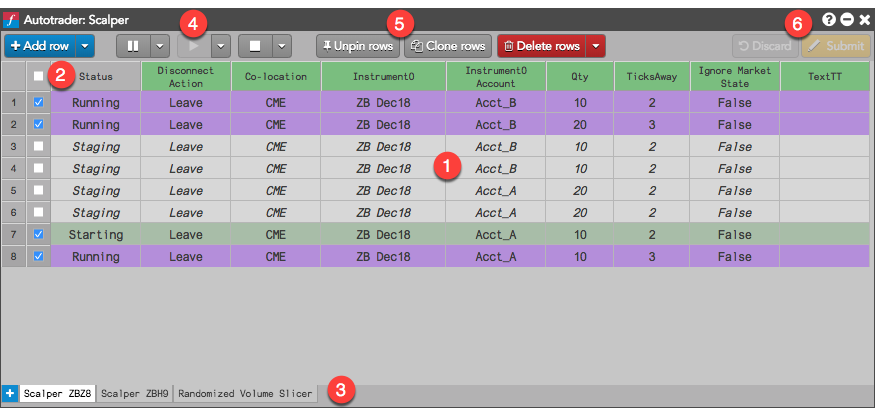

The Autotrader display comprises the following:

- Grid of algo instances that lists all instances of the algo that have been loaded into Autotrader.
- Columns for the status of the algo instances and all of their algo variables.
- Tabs for each algo loaded into the Autotrader widget.
- Algo player controls to play, pause and delete algo instances.
- Row management buttons to pin, clone and delete algo instance rows.
- Modification controls to apply or discard variable changes for running algos.